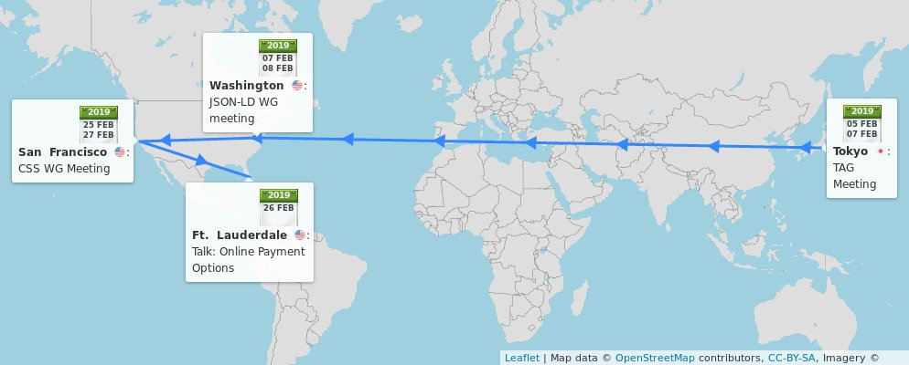

#timetoimplement The @csswg seeks feedback on #github https://github.com/w3c/csswg-drafts until 1 May 2019 https://twitter.com/w3c/status/1091020918023966726
https://twitter.com/w3cdevs/status/1091271379499003904üèÜ #HTML5 is in the Top 50 Developer Tools of 2018! "The innovation built on top of HTML5 continues to amaze all" via StackShare https://stackshare.io/posts/top-developer-tools-2018#html5
https://twitter.com/w3cdevs/status/1091292586642272257üóìÔ∏è February@w3c'>@w3c: @w3c'>@w3c groups' meetings, @w3cx #HTML5 course, Web payments conference, @W3CAustralia's roadshow, etc. More at https://www.w3.org/participate/eventscal.html
5-7 Feb.: The @tag holds its #f2fmeeting in #Tokyo üáØüáµ, hosted by @google https://github.com/w3ctag/meetings/tree/gh-pages/2019/02-tokyo

https://twitter.com/w3cdevs/status/10913385263005368327-8 Feb.: The @w3c #JSONLD #WorkingGroup meets @FolgerLibrary in #Washington, üá∫üá∏ https://www.w3.org/2018/json-ld-wg/Meetings/F2F/2019.02.DC
https://twitter.com/w3cdevs/status/956888716076822533

https://twitter.com/w3cdevs/status/109133853095197081812 Feb.: Launch of a new @w3cx'>@w3cx #MOOC session about #HTML5 Coding Essentials and Best Practices with Prof. @micbuffa. Enroll now and earn your @w3c Front-End Web Developer program certificate! https://www.edx.org/course/html5-coding-essentials-and-best-practices
https://twitter.com/w3cdevs/status/109133853453817036826 Feb.: @ibjacobs presents online #payment options during a @SmarterPayments #MAGMidYear19 conference panel, in #FortLaunderdale, FL üá∫üá∏ #WebPayment
https://twitter.com/SmarterPayments/status/1081256211742449670
https://twitter.com/w3cdevs/status/109133854057377382425-27 Feb.: The @csswg meets at @google offices in #SanFrancisco, üá∫üá∏ https://wiki.csswg.org/planning/sf-2019
https://twitter.com/w3cdevs/status/109133853931128832014, 21 and 22 Feb.: #Melbourne #Sydney or #Canberra? @w3c, @W3CAustralia and @ourANU organize their 2nd roadshow on the Future of the #Web: "Who is Managing your #privacy and #Identity on the Web?" https://cecs.anu.edu.au/events/w3c-anu-future-web-who-managing-your-privacy-and-identity-web
https://twitter.com/w3cdevs/status/1091338537637695494It illustrates the plasticity of the #Web as a platform: entertainment, commerce, communication, connectivity and also compute platform! New work is cooked in the strategy funnel on #github https://github.com/w3c/strategy/projects/2 by W3C's strategy team:
https://twitter.com/w3cdevs/status/982232776920334339
To add to the great series of @w3c Strategic Highlights blog posts on https://www.w3.org/blog/, watch this short video where @wseltzer explores emerging trends of the Web Platform and how they translate in terms of new technical work in W3C: https://vimeo.com/313340825 https://twitter.com/w3c/status/1087333884717658113
https://twitter.com/w3cdevs/status/1092473125109944320Thanks to @wseltzer for taking the time at #w3ctpac2018 to show us the view from @w3c's strategy for the future of the #Web https://vimeo.com/313340825 #Lyon #October2018
https://twitter.com/w3cdevs/status/1092473127408467968Today, the #ImmersiveWeb Working Group released its first official draft of #WebXR Device #API. WebXR is the successor to #WebVR, as @Lady_Ada_King explains in the third and last part of her interview on Web & XR (virtual + augmented reality) https://vimeo.com/313372258
In her first video, we learned how the Web and XR complement each other so well https://twitter.com/w3cdevs/status/1087765256846348289
https://twitter.com/w3cdevs/status/1092790255881719808#WebXR is set to replace #WebVR: it provides better integration with the rest of the Web platform, and a much firmer ground for Augmented Reality #AR in addition to Virtual Reality #VR https://twitter.com/w3cdevs/status/1052192603502854145
https://twitter.com/w3cdevs/status/1092790260025692165Her second video shows how #VR is already deployed on the Web today https://twitter.com/w3cdevs/status/1090307687106129924
https://twitter.com/w3cdevs/status/1092790258519994373The @w3c #ImmersiveWeb #WorkingGroup was meeting in California last week, with lots of progress made around the management of input controllers, hit testing for #AR and much more, to be brought to the specification in the upcoming few weeks https://twitter.com/NellWaliczek/status/1092495882157576193
https://twitter.com/w3cdevs/status/1092790265251856384The WebXR spec is developed on #github where you should go to bring feedback on the #API https://github.com/immersive-web/webxr/
https://twitter.com/w3cdevs/status/1092790263968382976The best way to play with #WebXR at the moment is through the WebVR-based #polyfill https://github.com/immersive-web/webxr-polyfill
https://twitter.com/w3cdevs/status/1092790262793945088With this First Public Working Draft, #WebXR Device API starts its path on the standardization track, aiming to become a @w3c #WebStandard https://www.w3.org/TR/2019/WD-webxr-20190205/ https://twitter.com/w3c/status/1092789169598935040
https://twitter.com/w3cdevs/status/1092790261497974784Thanks again to @Lady_Ada_King for sharing the vision behind the #ImmersiveWeb in this 3-part video series! https://vimeo.com/313372258
https://twitter.com/w3cdevs/status/1092790266942115845in a little more than an hour ⌚️… https://twitter.com/w3c_wai/status/1092810733979607041
https://twitter.com/w3cdevs/status/1092811279134347266In this talk, @alispivak shares some of the history of @MDN and how the Product Advisory Board (PAB) started end of 2017 is helping to better create the documentation developers want and need.
https://twitter.com/w3cdevs/status/1044965733778771968
Another video from our #w3cdevs2018 meetup last October in #Lyon: @alispivak presents @MDN and its intersections with @w3c standardization https://vimeo.com/312902015
https://twitter.com/w3cdevs/status/1093191160024059905Also, impressive report on the progress accomplished in 2018, with more goodness expected in 2019 https://twitter.com/MozDevNet/status/1086502592363053057
https://twitter.com/w3cdevs/status/1093191164763795456Among the highlights of the meeting from a @w3cdevs perspective: an upcoming Web developer survey to identify gaps and needs in the Web platform, a cross-browser dev conference in 2019, and solid plans for increasing interactions between docs & standardization
https://twitter.com/w3cdevs/status/1093191163564253184The MDN Product Advisory Board recently met in #NYC - the minutes of the meeting are available in their github repo https://github.com/mdn/pab/blob/master/meeting-notes/2019-01-notes.md https://twitter.com/torgo/status/1085917149418479616
https://twitter.com/w3cdevs/status/1093191162192642049Thanks to @alispivak for her talk to the #w3cdevs2018! https://vimeo.com/312902015
https://twitter.com/w3cdevs/status/1093191166705700870That group is already responsible for the maintenance of the Device Orientation API, which has recently got renewed attention in a tension between mitigation of privacy concerns & backwards compatibility https://twitter.com/anssik/status/1092782455969538049
The new charter for the Devices and Sensors Working Group adds maintenance of the existing Geolocation API (navigator.getCurrentPosition()) to its existing scope https://www.w3.org/2019/02/DeviceAPICharter-ac.html https://twitter.com/w3c/status/1093184121663303686
The updated charter has now been approved! https://www.w3.org/2019/03/devices-sensors-wg-charter.html
What do we want? A maintained Geolocation API!
When do we want it? Now!
Where do we want it? üìç
https://twitter.com/w3c/status/1106456302925025281
https://twitter.com/w3cdevs/status/1093197445713088515They are also developing a new Geolocation API based on the Generic sensor framework
https://twitter.com/w3cdevs/status/1034893860479148032
https://twitter.com/w3cdevs/status/1093197447730466816For a reminder about what Decentralized Identifiers are https://twitter.com/w3cdevs/status/1061972983831556097
A charter for a possible brand new @w3c working group - Decentralized Identifier #DID https://w3c-ccg.github.io/did-wg-charter/ https://twitter.com/w3c/status/1093455619686830080
https://twitter.com/w3cdevs/status/1093503255097864193This would follow up on the work of the Credentials #CommunityGroup https://www.w3.org/community/credentials/ whose work already seeded the work on W3C verifiable credentials https://www.w3.org/2017/vc/WG/ https://twitter.com/w3cdevs/status/1061972978475433984
https://twitter.com/w3cdevs/status/1093503256347713536This document provides detailed examples and analysis on how to use #WAI_ARIA for various well-known UI patterns, e.g. grids, sliders, accordions, alerts.


If you use #WAI_ARIA to make your Web applications accessible, take a look at the new release of the @wai #WAI_ARIA authoring practices:
https://www.w3.org/TR/2019/NOTE-wai-aria-practices-1.1-20190207/
https://twitter.com/w3cdevs/status/1093864467534893056And make sure to prefer and respect existing HTML semantics where ever possible https://www.w3.org/TR/using-aria/#rule1
https://twitter.com/w3cdevs/status/1093864470655483907But before sticking #WAI_ARIA attributes everywhere, remember that *No ARIA is better than Bad ARIA*
https://www.w3.org/TR/2019/NOTE-wai-aria-practices-1.1-20190207/#no_aria_better_bad_aria
https://twitter.com/w3cdevs/status/1093864469552394240Definitely add Web programming skills to your resume! https://www.edx.org/professional-certificate/front-end-web-developer-9 https://twitter.com/edXOnline/status/1094264698822934529
https://twitter.com/w3cdevs/status/1094906112233693185At last #w3cdevs2018 #meetup, we had the pleasure to hear @nitot explain how #OpenSource Web-based innovations can help get personalized online services without sacrificing #privacy: https://vimeo.com/312901105
Thanks to @webcastors for shooting the video during the #meetup and to @QIHU_Official for providing its English transcripts and Chinese subtitles #October2018 #Lyon https://www.w3.org/2018/10/Meetup/
https://twitter.com/w3cdevs/status/1095696737690402817Speaking of #privacy, and if you happen to be in #Melbourne, #Sydney or #Canberra in the coming weeks, go hear from leading experts as they discuss progress and challenges to protect private data. https://twitter.com/W3CAustralia/status/1090866532505116672
https://twitter.com/w3cdevs/status/1095696740920016896Are you based in #Europe and actively involved in @w3c #WebStandards development? Do apply for funding this work (before March 4)! https://www.standict.eu/OpenCalls/5th-Open-Call @Stand_ICT https://twitter.com/Stand_ICT/status/1085880413095149568
Financial support is available for standardization linked with a list of well identified topics, many of which intersect with @w3c's agenda. Check them out: https://www.standict.eu/OpenCalls/5th-Open-Call#Topics
https://twitter.com/w3cdevs/status/1096344210771509249Applicants must reside/work in #Europe üá™üá∫, and have experience wrt development of standards. To our followers who give feedback, contribute to and implement @w3c specifications, how about submitting an application now? üôã‚Äç‚ôÄÔ∏èüôã‚Äç‚ôÇÔ∏èhttps://www.standict.eu/applicant/register
https://twitter.com/w3cdevs/status/1096344214332420096To all #developers, this beta release needs to be tested on a very large scale to ensure it operates as expected on all sorts of EPUB 3 files, especially those including EPUB 3.2's new features. EPUBCheck 4.2.0 is available for download: https://github.com/w3c/epubcheck/releases/tag/v4.2.0-beta https://twitter.com/w3c/status/1100109031669198848
https://twitter.com/w3cdevs/status/1100116335315566593This specification gives Web #developers the capability to measure the #performance of their #applications, by specifically creating custom performance metrics for individual page elements.
Congrats to editor @igrigorik and the @webperfwg for the newly published @w3c #WebStandard "User Timing Level 2": https://www.w3.org/TR/user-timing-2/ #WebPerf #timetoadopt https://twitter.com/w3c/status/1100342373383655425
https://twitter.com/w3cdevs/status/1100349604661473280Read the primer https://w3c.github.io/perf-timing-primer/#user-timing and other @MDN related resources https://developer.mozilla.org/en-US/docs/Web/API/User_Timing_API/Using_the_User_Timing_API on how to use the User Timing #API
https://twitter.com/w3cdevs/status/1100349605848469504Are you also based in #Europe and actively involved in @w3c #WebStandard development? Do apply for funding your work before March 4 - ONE WEEK left! https://www.standict.eu/OpenCalls/5th-Open-Call https://twitter.com/Stand_ICT/status/1099957622277578752
https://twitter.com/w3cdevs/status/1100351167174004737As a preamble of today's panel, check this short video of @ibjacobs giving an update of @w3payments' work to make #payments on the #Web easier and more #secure
https://vimeo.com/313894743 https://twitter.com/w3cdevs/status/1091338540573773824
One of @w3payments' priorities in 2019 is to finalize the Payment Request #API allowing merchants' #websites to use one or more payment methods, with #browsers facilitating the payment flow between merchant and user: https://www.w3.org/TR/payment-request/
https://twitter.com/w3cdevs/status/1100387080457388034Thanks to @ibjacobs for taking the time at #w3ctpac2018 to do this short summary of @w3c #WebPayment work: https://vimeo.com/313894743 #Lyon #October2018
https://twitter.com/w3cdevs/status/1100387083120713728And if you ever wondered about the comparative meanings of inter­nation­ali­zation (i18n) and localization (l10n), see in https://www.w3.org/International/questions/qa-i18n and/or read this recent article by @stokel: https://twitter.com/CodepointsNet/status/1100432376402972673
How to make the World Wide Web really world wide? At last #w3cdevs2018 #meetup, we had the pleasure to hear @ri explain how @w3c's I18n activity (@webi18n) help secure universal access to the #Web, regardless of #language, #script, or #culture
https://vimeo.com/312910612
https://twitter.com/w3cdevs/status/1100452112478191616Thanks to @webcastors for shooting the video during the #meetup and to @QIHU_Official for providing its English transcripts and Chinese subtitles #October2018 #Lyon https://vimeo.com/312910612
https://twitter.com/w3cdevs/status/1100452114151682050